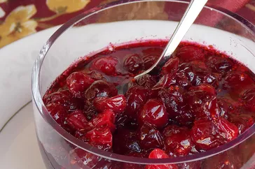

Odin Recipes
Cranberry Sauce

This cranberry sauce recipe uses fresh cranberries, sugar, and orange
juice to make a Thanksgiving classic.
Ingredients
- Fresh Cranberries
- Sugar
- Orange Juice
Steps
- Gather all ingredients.
-
Dissolve sugar in the orange juice in a medium saucepan over medium
heat.
-
Stir in the cranberries and cook until they start to pop, about 10
minutes..
-
Remove from heat and place sauce in a bowl. It will thicken as it cools.